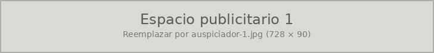
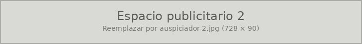

Encuentra tu próximo evento gamer
Torneos, convenciones, LAN parties y lanzamientos en todo Chile, reunidos en un solo lugar.
Próximos eventos
No hay eventos próximos publicados.
Destacados
No hay eventos destacados.
Avisos


Torneos, convenciones, LAN parties y lanzamientos en todo Chile, reunidos en un solo lugar.
No hay eventos próximos publicados.
No hay eventos destacados.

